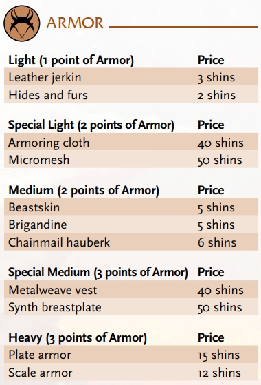
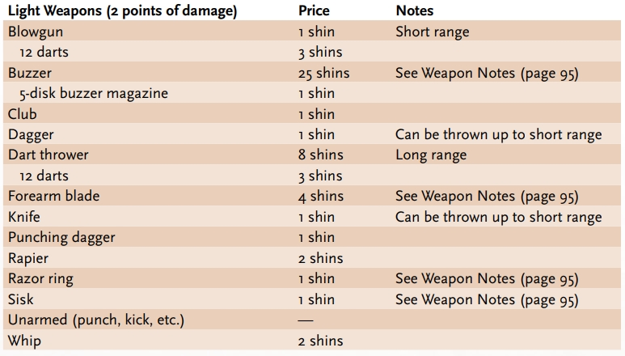
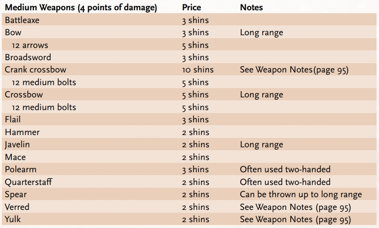
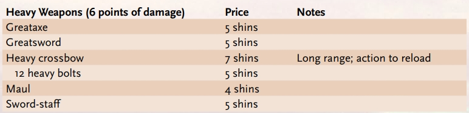
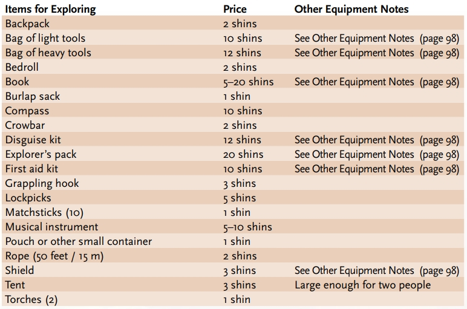
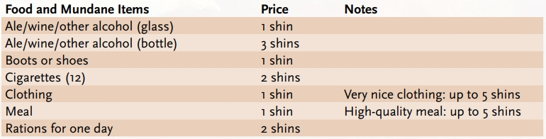
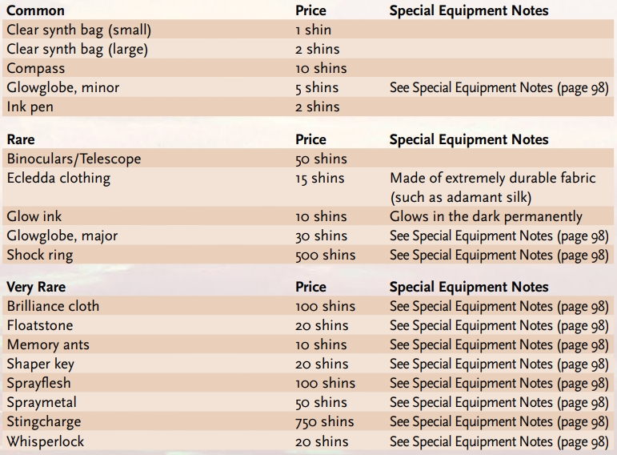

CURRENCY
Thanks to the mining and metallurgy of the prior worlds, and their ability to create anything they wished (or so it seems, anyway), no metal is rarer than any other. People in the Ninth World have no concept of gold, silver, gemstones, or even diamonds as being valuable due to their scarcity. Such materials are valuable based on their beauty or usefulness alone. Most civilized societies use generic coins commonly referred to as shins.
Shins are usually metal but can be made of glass, plastic, or substances that have no name. Some are jagged bits of interesting material or small, coinlike objects (such as highly decorative buttons from a machine), and others are properly minted and stamped, with writing and images. Some regions of the Ninth World only accept coins that were minted in that realm; others accept all coins, regardless of origin. This custom varies from place to place and society to society. In Peek-Esok-Eviet shins are printed from special Oorgolian material.
ENCUMBRANCE
Weights of objects are not listed. In fact, it would be futile to do so because the weight of an object depends on what materials were used to make it. An iron axe and a ceramic axe weigh different amounts.
There’s no need to keep track of how much a character carries. If the GM determines that a character is carrying too much equipment, the GM should either (1) assign a difficulty and ask for a Might action, or (2) assign the weight a cost to be added to the character’s Speed Effort. Method 1 is useful when a character wants to carry a single heavy object for a limited time—for example, moving a hefty iron box out of a ruin and loading it onto a cart for transport back to civilization. Method 2 works well for long-term encumbrance, such as when a character dons a second backpack full of machine parts and continues exploring. As a guideline for what the Speed Effort penalty should be, compare the character’s burden to the encumbrance for wearing armor, and assign the penalty according to that assessment (1 for light, 2 for medium, or 3 for heavy).
EQUIPMENT LISTS AND PRICES
The items presented in this chapter are general examples, not exhaustive lists. Equipment in the Ninth World is often much like that found in ancient or medieval societies but can be far more advanced. For example, a simple tent or bedroll might be constructed of synthetic fiber that makes it entirely water-resistant as well as far lighter and warmer than cloth. A chainmail hauberk could be made in whole or in part from glassy links that are harder and lighter than steel.
It’s worth noting that some Ninth World tools and devices would never be found in a medieval setting because they’re relics from a previous world or were created with knowledge salvaged from a previous world. Examples of these kinds of objects are ink pens, clothing made from denim or spandex, liquid soap, screw-top metal canisters, rubber gloves, umbrellas, sticky tape, nylon fishing line, spray bottles, and a hundred more similar items. They also include the objects listed under Special Equipment, as well as random oddities and occasional cyphers and artifacts—although finding either of the latter for sale like ordinary goods is quite uncommon.
For starting characters there is price limit: 5 shins on starting weapons and 15 shins on starting armor. If a player doesn’t select a free weapon or armor they are entitled to, those are the amounts they should get as compensation.
ARMOR
Characters expecting danger frequently wear armor. Even the simplest of protective coverings helps against slingstones and sword-strokes, and more sophisticated or heavier armor protects against graver threats.
You can wear only one type of armor at a time—you cannot wear chainmail hauberk and scale armor, for example. However, Armor bonuses from multiple sources combine to provide a total Armor rating. For example, if you have subdermal implants that give you +1 Armor, a force field that offers another +1 Armor, and beastskin armor that grants +2 Armor, you have a total of 4 Armor.
 USING ARMORAnyone can wear any armor, but it can be taxing. Wearing armor increases the cost of using Speed Effort (see the table). So if you’re wearing light armor and want to use two levels of Effort on a Speed-based roll to run across difficult terrain, it costs 7 points from your Speed Pool rather than 5 (3 for the first level of Effort, plus 2 for the second level of Effort, plus 1 per level for wearing light armor). Edge reduces the overall cost as normal. Glaives and Jacks have abilities that reduce the cost of wearing armor
| Armor | Speed Effort additional cost |
|---|---|
| Light | 1 |
| Medium | 2 |
| Heavy | 3 |
WEAPONS
Not all characters are familiar with all weapons. Glaives know their way around most types. Jacks prefer light or medium weapons and have an inability with heavy weapons. Nanos usually stick to light weapons and have an inability with medium and heavy weapons. (See the chart on page 96 for additional details on weapons).
Light weapons inflict only 2 points of damage, but they ease the attack roll because they are fast and easy to use. Light weapons are punches, kicks, knives, handaxes, darts, and so on. Weapons that are particularly small are light weapons.
Medium weapons inflict 4 points of damage. Medium weapons include broadswords, battleaxes, maces, crossbows, spears, and so on. Most weapons are medium. Anything that could be used in one hand (even if it’s often used in two hands, such as a quarterstaff or spear) is a medium weapon.
Heavy weapons inflict 6 points of damage, and you must use two hands to attack with them. Heavy weapons are huge swords, great hammers, massive axes, halberds, heavy crossbows, and so on. Anything that must be used in two hands is a heavy weapon.
  WEAPON NOTES
Buzzer: This handheld weapon fires thumbnailsized bladed disks up to short range. It holds five disks in a magazine and requires an action to reload. It can be used as a rapid-fire weapon.
Crank Crossbow: This long-range weapon is similar to a standard crossbow, but it has a magazine that holds five bolts, requiring a small crank to advance to the next bolt. Action to reload. It can be used as a rapid-fire weapon.
Forearm Blade: This metal weapon is basically a bracer with a mounted blade on it. A favorite of berserkers as well as the Jaekels of Aras Island.
Razor ring: This short-range weapon is just what it sounds like: a ring with a razor-sharp outer edge. The inner edge is often padded for holding.
Sisk: This solid, bladed throwing disk is about the diameter of a human head. This short-range weapon is used most frequently by the warriors of Milave.
Verred: This weapon resembles a sword with two forked blades. It is short and useful in defense as well as offense.
Yulk: This weapon resembles a splayed metal claw mounted on a 2-foot (60 cm) haft. It is used mainly by raiders and wildmen of the Beyond.
OTHER EQUIPMENT
 OTHER EQUIPMENT NOTES
Bag of Light Tools: Contains small tongs, pliers, screwdriver, small hammer, small pry bar, lockpicks, 10 feet (3 m) of string, 3 feet (1 m) of wire, and miscellaneous screws and nails.
Bag of Heavy Tools: Contains hammer, six spikes, crowbar, large tongs, chisel, and 10 feet (3 m) of light but strong metal cable.
Book: Provides an asset to any roll made concerning the subject of the book as long as the character has the book in their possession, can read it, and can devote half an hour to the task (or twice as long as normal, whichever is greater).
Disguise Kit: Contains cosmetics, facial prostheses, and a few other tricks. Provides an asset to disguise tasks, easing the task when you attempt to disguise yourself as another person.
Explorer’s Pack: Contains 50 feet (15 m) of rope, rations for three days, three spikes, hammer, warm clothes, sturdy boots, three torches, and two minor glowglobes.
First Aid Kit: Contains bandages, a few tools, salves, and so on. Provides an asset to ease healing tasks.
Shield: Provides an asset to Speed defense rolls.
SPECIAL EQUIPMENT
Nothing on the special equipment list is regularly manufactured by Ninth World crafters. Most likely, these items are recovered from old sites, but they’re found often enough and in large enough quantities that many communities offer them for sale. The GM is the final arbiter of whether or not the characters can obtain these items, but as a general rule, common special items are always available, rare special items are available 50 percent of the time, and very rare special items are available 25 percent of the time. SPECIAL EQUIPMENT NOTES
Brilliance Cloth: This synthcloth obeys the thoughts of anyone touching it. It has the ability to slowly change shape and color (but not consistency). A major change requires about ten minutes. A garment of brilliance cloth can be made into any other garment, for example, but it can’t be made protective.
Floatstone: A piece of rock, usually about the size of a brick, that pulls against gravity. Most people think of it as having a “negative weight” of about –10 pounds. Thus, if attached to anything lighter, it floats away.
Glowglobe: This device illuminates everything in short range with soft light. It can hover in place on its own, or it can be attached to something. The minor glowglobe lasts for an hour when activated. The major glowglobe functions continuously.
Memory Ants: This is a small jar of tiny insects that run across a page of text and then return to the jar. When spilled out again and given ink, they replicate the text once and then die.
Shaper Key: A shaper key is a wad of putty that can be inserted into a conventional lock. It takes on the form of the key for that lock and then hardens, permanently, into a functional key.
Shock Ring: This weapon is a razor ring with a charged outer edge that inflicts 4 additional points of damage. If it misses, it returns unerringly to the thrower’s hand. Its power is normally never depleted.
Sprayflesh: This tiny synth canister sprays out a sticky gelatin that covers and seals wounds instantly. Its use restores 6 points to a character’s Might Pool.
Spraymetal: Similar to sprayflesh, but instead of restoring flesh, it repairs minor damage (breaks, tears, and holes) in any simple object—even a flexible object like cloth or a leather bag—but not devices or anything as complex as a crossbow. It has the strength of steel.
Stingcharge: This handheld weapon fires an electrical bolt that inflicts 3 points of damage at immediate range and 2 points of damage at short range. It cannot be made to fire farther than that. A stingcharge can be used as a rapid-fire weapon. Its power is normally never depleted.
Whisperlock: This is similar to a padlock, made of powerful synthsteel or stronglass, except that it has no keyhole. It opens with a secret word selected when it is initially locked. The word must be spoken into the lock itself.